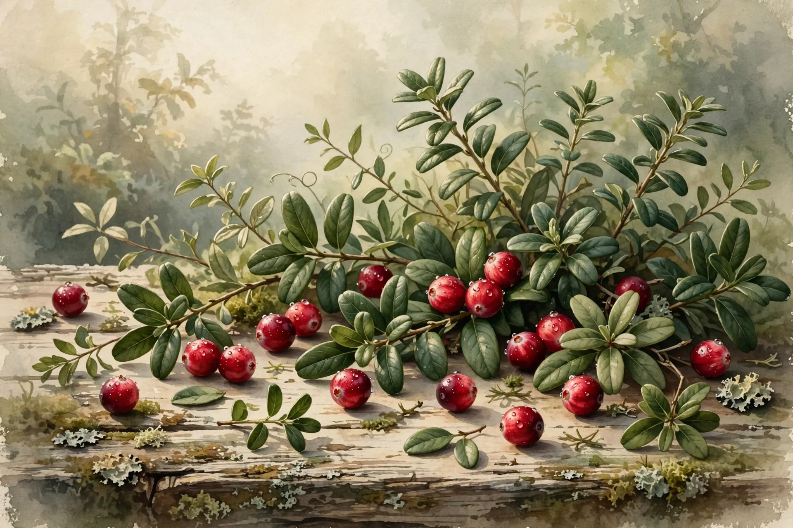

🍽️ Nutrition
Cranberries Prevent UTIs After All. 50 Trials Reversed a Decade of Medical Skepticism
For years, doctors cited a Cochrane review to tell patients cranberry juice was folk medicine with no real evidence. An update pooling 50 trials and 8,857 participants found cranberry products cut symptomatic UTIs by 30 percent in women with recurrent infections, and by more than half in children.

- Title
- Cranberries for preventing urinary tract infections
- Authors
- Williams G, Stothart CI, Hahn D, Stephens JH, Craig JC, Hodson EM (2023)
- Institution
- Centre for Kidney Research, The Children's Hospital at Westmead; Flinders University; University of Sydney (Cochrane Kidney and Transplant)
- Journal
- Cochrane Database of Systematic Reviews 2023, Issue 11, Art. No. CD001321
- Sample
- n=8,857 across 50 randomized trials (45 vs placebo or no treatment; 6,211 meta-analyzed for the primary outcome). Subgroups: 1,555 women with recurrent UTIs, 504 children, 1,434 people susceptible after medical interventions
- Method
- Systematic review and meta-analysis of randomized and quasi-randomized trials; independent dual data extraction, Cochrane risk-of-bias assessment, GRADE certainty ratings
- Key Finding
- Cranberry products reduced symptomatic, culture-verified UTIs overall (RR 0.70); in women with recurrent UTIs (RR 0.74), in children (RR 0.46), and in people susceptible after interventions (RR 0.47). No benefit in the elderly, pregnant women, or adults with neurogenic bladder dysfunction
- Effect Size
- RR 0.70 (95% CI 0.58 to 0.84): 30% relative risk reduction overall. RR 0.74 (26% reduction) in women with recurrent UTIs; RR 0.46 (54% reduction) in children; RR 0.47 (53% reduction) post-intervention. Heterogeneity I² = 69% overall
- Counterintuition
- ⚡⚡⚡⚡ 4/5
- Replication
- Meta-analyzed (50 RCTs, moderate-certainty GRADE for the two main subgroups). A 2025 multicentre RCT of whole cranberry powder (n=150) published after the review's cutoff found a consistent 52% reduction (RR 0.48)
Ask your grandmother how to keep urinary tract infections away and she will answer before you finish the question: drink cranberry juice. For decades, medicine's reply was a polite version of an eye-roll, because cranberries were folk remedy, the kind of thing that survives on anecdote and wishful thinking, and in 2012 the highest authority in evidence-based medicine seemed to settle the matter when a Cochrane review pooling 24 studies and 4,473 participants concluded that cranberry juice "cannot currently be recommended for the prevention of UTIs." Headlines translated the verdict into plainer language, cranberry juice doesn't work, doctors repeated it for a decade, and the only people who didn't get the message were the patients, who kept buying cranberry products anyway.
The message has now been retracted by the same institution that sent it, because in 2023 the Cochrane Collaboration published the fifth update of its cranberry review, adding 26 new studies to bring the total to 50 randomized trials with 8,857 participants, and the conclusion reversed: "These data support the use of cranberry products to reduce the risk of symptomatic, culture-verified UTIs in women with recurrent UTIs, in children, and in people susceptible to UTIs following interventions." Across the 26 trials that could be pooled for the main outcome, cranberry products cut the risk of symptomatic, culture-confirmed UTIs by 30 percent (risk ratio 0.70, 95% CI 0.58 to 0.84), with moderate-certainty evidence, which means the folk remedy was right and the experts needed eleven more years of data to see it.
The numbers deserve a closer look, because the benefit is specific rather than universal: in women with recurrent UTIs, eight trials with 1,555 participants found a 26 percent risk reduction (RR 0.74); in children, five trials with 504 participants found a striking 54 percent reduction (RR 0.46); and in people prone to UTIs after medical interventions such as bladder radiotherapy, six trials with 1,434 participants found a 53 percent reduction (RR 0.47). The review used Cochrane's standard machinery, independent data extraction by at least two authors, risk-of-bias assessment, and GRADE ratings for certainty, and it measured the outcome that matters, symptomatic infections confirmed by urine culture rather than merely bacteria showing up in a sample.
There is also a plausible mechanism, which separates this from remedies that work only in the imagination: cranberries contain proanthocyanidins, compounds that inhibit the adherence of P-fimbriated E. coli, the strain behind most UTIs, to the cells lining the bladder, so bacteria that cannot grip the bladder wall get flushed out instead of colonizing it. The original guess about how cranberries worked, that they acidified the urine, appears to have been wrong, while the adhesion-blocking story has laboratory evidence behind it, and a remedy with a mechanism, a consistent effect across dozens of trials, and a reversed Cochrane verdict is no longer folk medicine but pharmacology with a marketing problem.
Here is the calculation the review leaves to the reader. Roughly 3 in 10 women who get UTIs develop recurrent infections, and each episode brings an average of 6.1 days of symptoms plus 1.2 lost workdays, so applying the 26 percent relative reduction to that 30 percent baseline gives an absolute risk reduction near 7.8 percentage points, which means roughly 13 women with recurrent UTIs need to take cranberry products for a year to prevent one additional infection, while for children the 54 percent relative reduction implies a number needed to treat near 6. Scale it up: about 15 million American women get UTIs each year, with roughly 1.5 million recurrences, according to Washington University microbiologist Scott Hultgren, so if every woman with recurrent infections adopted cranberry products, a 26 percent relative cut would avert on the order of 390,000 recurrences a year in the United States alone. Each averted recurrence is also an antibiotic course not prescribed, which matters when 15.7 percent of E. coli urine isolates already resist two or more antibiotic classes.
Now the strongest case against this finding, stated at full strength, starting with the most awkward result in the entire review: the missing dose-response, because trials using low, moderate, and high doses of proanthocyanidins showed no difference in benefit, and if PACs are the active ingredient, more of them should do more, which keeps the mechanism story in the realm of plausible rather than proven. Then there are the three populations where cranberries did nothing, elderly men and women in institutions (RR 0.93), pregnant women (RR 1.06), and adults with neurogenic bladder dysfunction (RR 0.97), so "Cranberries prevent UTIs" as a blanket claim is false and the evidence supports three specific groups while exonerating no one else. The product question is unresolved too, since the review could not say whether juice beats capsules or vice versa, the certainty of that evidence was rated very low, and juice trials bled participants who would not keep drinking the stuff; against antibiotics, the evidence is two small trials with 385 people and a risk ratio of 1.03, which is a shrug rather than a victory; and gastrointestinal side effects ran higher with cranberry (RR 1.33, with the confidence interval just touching 1.00). The marketplace is unregulated chaos, with no required standard for PAC content, labels that often omit it, and no established dosing regimen, so a shopper cannot reliably buy what the trials tested, and finally, everything here is prevention, because nothing in 50 trials suggests cranberry treats an active infection, and reaching for juice instead of antibiotics during a real UTI risks letting it climb toward the kidneys.
The skeptic's case is serious, and the review's authors printed most of it themselves, yet what shifts the balance is that this is not one lab's result but the totality of randomized evidence, assembled by reviewers with no product to sell, and the signal survived the strictest endpoint in the field. The 2012 null was not wrong so much as early: 24 studies, many of them tiny, testing unstandardized products at uncertain doses, and when 26 more trials arrived, many using capsules and powders with measured PAC content, the picture changed, which is how evidence-based medicine is supposed to work. The story has continued past the review's March 2023 literature cutoff, because a 2025 multicentre randomized trial of whole cranberry powder in 150 women with recurrent UTIs found a 52 percent reduction in culture-confirmed infections (RR 0.48), landing squarely in line with the Cochrane estimate, and the reversal is holding.
What We Didn't Prove
- Cranberry products were tested for prevention, not treatment. Nothing here shows they cure an active UTI.
- The benefit is established for three groups: women with recurrent UTIs, children, and people susceptible after interventions. It was not found in the elderly, pregnant women, or people with neurogenic bladder dysfunction.
- No optimal dose, product type, or duration is established. Low, moderate, and high PAC doses looked the same, which is biologically puzzling.
- Most trials lasted 12 months or less. Long-term safety and sustained benefit are unmeasured.
- The PAC adhesion-blocking mechanism is supported by laboratory work, not proven by these trials.
- The population-scale arithmetic (390,000 averted recurrences) assumes full adoption and that trial effects transfer to real-world use. Both are generous assumptions.
- Heterogeneity was substantial (I² = 69% for the main outcome), so the average effect hides real variation between trials.
The Bottom Line
A 2023 Cochrane review of 50 randomized trials reversed a decade of medical skepticism: cranberry products cut symptomatic, culture-verified UTIs by 30 percent overall, 26 percent in women with recurrent infections, and more than half in children. The effect is prevention-only, limited to specific groups, and the ideal product and dose remain unknown. The folk remedy earned its promotion to evidence-based medicine. The fine print still matters.
What You Can Do
- If you get recurrent UTIs (two in six months, or three in a year), ask your clinician about adding a daily cranberry product. The evidence now supports the conversation; a decade ago it did not.
- Prefer capsules or tablets over juice cocktail. Trials tested both, but juice drinkers dropped out, and cocktail juice loads sugar without proven extra benefit.
- Look for products that state their proanthocyanidin (PAC) content on the label, and be skeptical of ones that don't. There is no regulated standard, so label transparency is your best proxy for quality.
- Use it as prevention, taken daily, not as a rescue remedy. It will not treat an infection you already have; burning, urgency, or fever still warrant prompt medical care and, when prescribed, antibiotics.
- If you are pregnant, elderly in residential care, or have neurogenic bladder dysfunction, the evidence does not support cranberry for prevention. Discuss proven options with your doctor instead.
- Track your recurrences. If infections continue despite prevention, ask about antibiotic prophylaxis or other strategies rather than doubling down on supplements.
Related Reading

Sources
- Williams G, Stothart CI, Hahn D, Stephens JH, Craig JC, Hodson EM. Cranberries for preventing urinary tract infections. Cochrane Database Syst Rev. 2023;11(11):CD001321. doi:10.1002/14651858.CD001321.pub7
- Jepson RG, Williams G, Craig JC. Cranberries for preventing urinary tract infections. Cochrane Database Syst Rev. 2012;10:CD001321. doi:10.1002/14651858.CD001321.pub5
- Whole cranberry fruit powder supplement reduces the incidence of culture-confirmed urinary tract infections in women with a history of recurrent urinary tract infection: a 6-month multicentre, randomised, double-blind, placebo-controlled trial. Proc Nutr Soc. 2025. doi:10.1017/S0029665125000758
- Advani SD, Thaden JT, Perez R, Stair SL, Lee UJ, Siddiqui NY. State-of-the-Art Review: Recurrent Uncomplicated Urinary Tract Infections in Women. Clin Infect Dis. 2025;80(3):e31-e42. doi:10.1093/cid/ciae653
- Cantón R, Lim A-N, Cortés V, Díaz-Regañón J, et al. Uncomplicated Urinary Tract Infections: From an Invisible Impact to a Visible Change in Complex Care. Open Forum Infect Dis. 2026. PMCID: PMC13341222
- Why do some people get UTIs over and over? A new report holds clues. NPR. April 13, 2023. npr.org